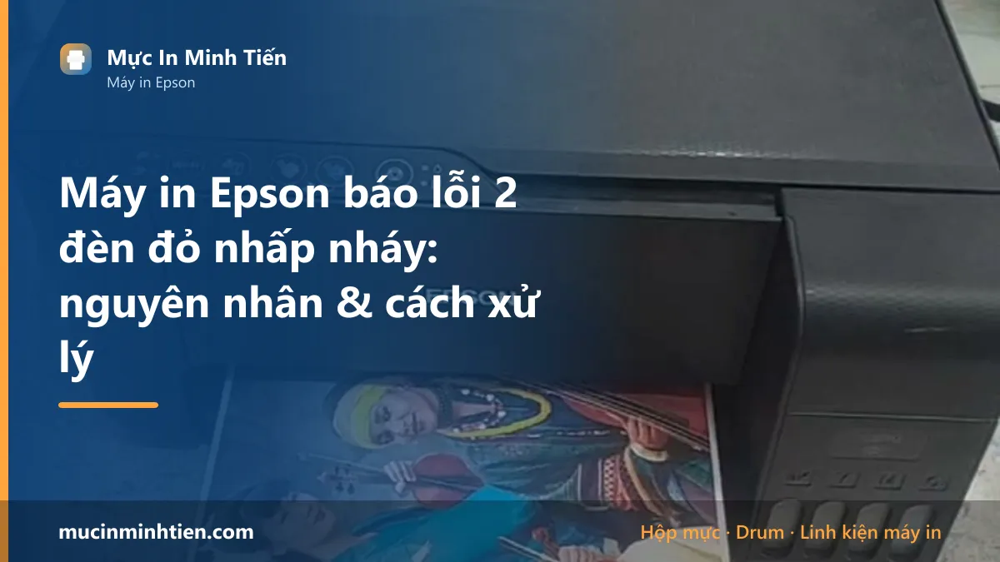
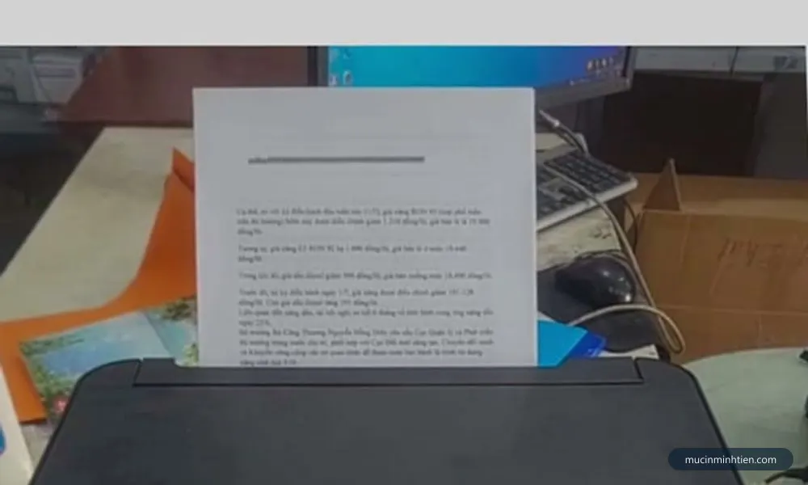
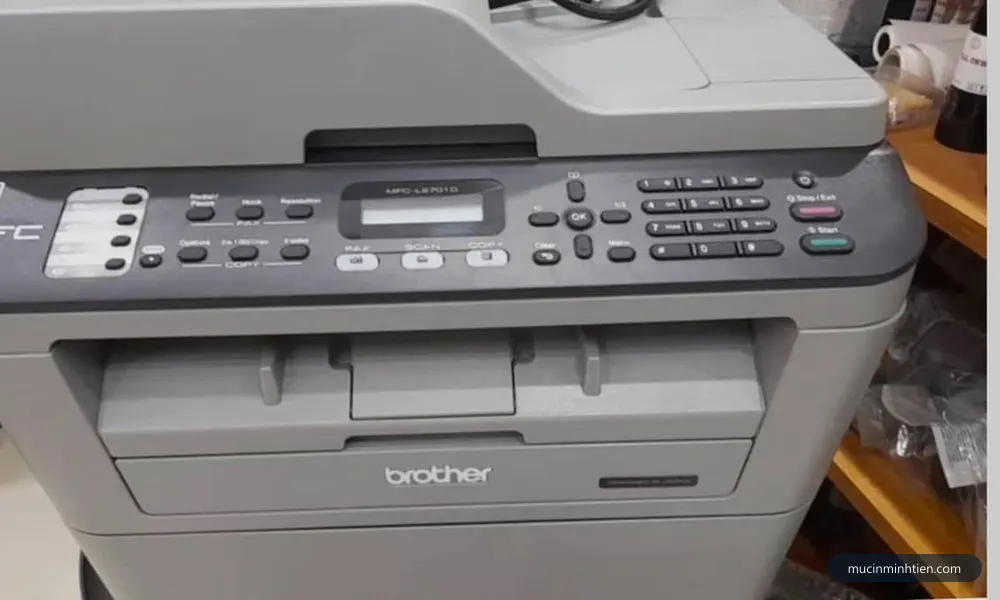
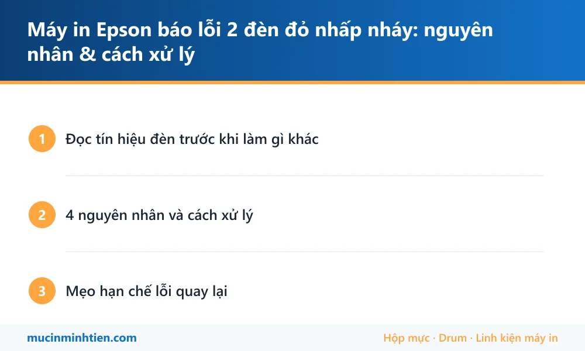
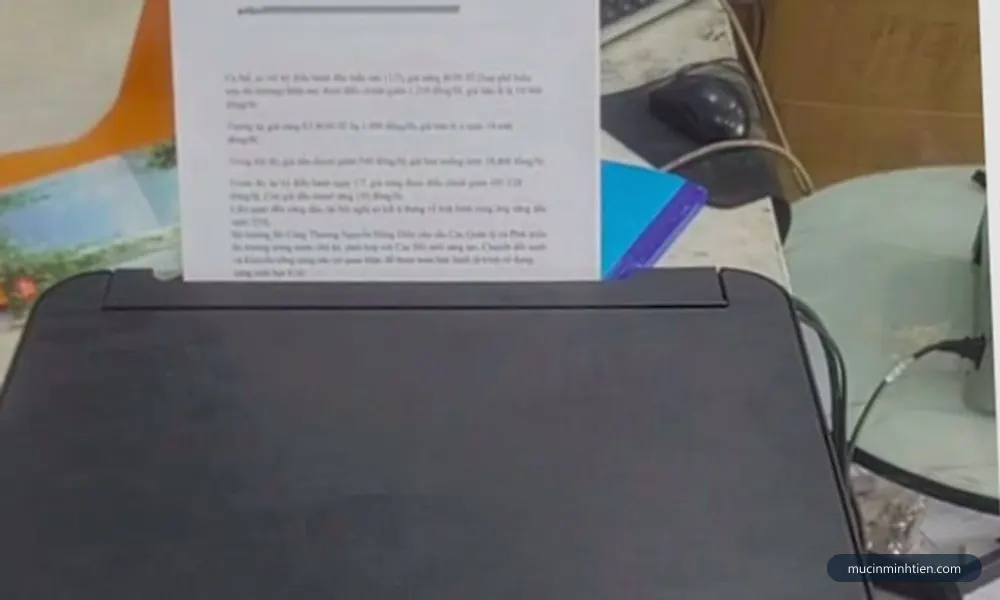

Máy in Epson báo lỗi 2 đèn đỏ nhấp nháy: nguyên nhân & cách xử lý

Máy in phun Epson dòng L (EcoTank) rất được ưa chuộng ở văn phòng nhỏ và gia đình, nhưng có một "bệnh" khiến nhiều người bối rối: đang in bình thường thì máy dừng, hai đèn đỏ nhấp nháy liên tục, bấm gì cũng không in tiếp. Bài này giúp bạn đọc đúng tín hiệu đèn và xử lý theo từng nguyên nhân.
Đọc tín hiệu đèn trước khi làm gì khác
- 1 đèn giấy nháy: hết giấy hoặc kẹt giấy — chưa phải lỗi nặng.
- 1 đèn mực nháy: sắp hết mực hoặc chưa nhận mức mực sau khi châm.
- 2 đèn (giấy + mực) nháy xen kẽ: thường là kẹt giấy sâu bên trong hoặc có vật lạ ở đường giấy.
- 2 đèn nháy đồng thời, liên tục: phần lớn là tràn bộ đếm mực thải (waste ink counter) — máy tự khoá để tránh mực thải tràn ra ngoài.

4 nguyên nhân và cách xử lý
1. Kẹt giấy hoặc còn mảnh giấy sót bên trong
- Tắt máy, rút điện, mở nắp trước và khay giấy.
- Soi đèn kiểm tra dọc đường giấy, rút giấy kẹt theo chiều giấy đi ra để tránh rách vụn.
- Đóng nắp, cắm điện bật lại. Nếu do kẹt giấy, đèn sẽ hết nháy ngay.
2. Chưa xác nhận mức mực sau khi châm mực
Sau khi châm mực vào bình, một số dòng yêu cầu xác nhận qua nút mực (giữ 3 giây) hoặc qua driver trên máy tính. Nếu quên bước này, máy vẫn coi là "hết mực" và giữ đèn đỏ. Với dòng L có màn hình nhỏ, thao tác xác nhận nằm trong menu mực.
3. Tràn bộ đếm mực thải (nguyên nhân phổ biến nhất)
Mỗi lần vệ sinh đầu phun, máy bơm một ít mực xả vào tấm thấm mực thải dưới đế máy và cộng dồn vào bộ đếm. Khi bộ đếm đạt ngưỡng, máy khoá và nháy 2 đèn đỏ — kể cả khi máy vẫn in tốt. Hướng xử lý:
- Reset bộ đếm bằng phần mềm reset đúng model (mỗi dòng L dùng bản khác nhau).
- Kiểm tra tấm thấm mực: nếu đã ướt đẫm, cần thay hoặc vệ sinh — chỉ reset suông thì lần sau mực thải có thể tràn thật, chảy xuống bo mạch.
- Nhiều người lắp thêm bình chứa mực thải ngoài để lần sau không phải tháo máy.
4. Lỗi phần cứng (bộ sấy, cảm biến, bo mạch)
Nếu đã loại trừ 3 nguyên nhân trên mà đèn vẫn nháy — đặc biệt khi máy có tiếng kêu lạ hoặc đầu in không dịch chuyển — thì thường là lỗi cảm biến hoặc bo mạch, cần thợ có đồ nghề kiểm tra.

Mẹo hạn chế lỗi quay lại
- Hạn chế bấm vệ sinh đầu phun (head cleaning) liên tục — mỗi lần vệ sinh tốn mực và cộng nhanh bộ đếm mực thải. In mờ hãy thử in trang test trước, chỉ vệ sinh khi thực sự cần.
- Dùng mực đúng chủng loại; mực trôi nổi dễ tắc đầu phun, khiến bạn phải vệ sinh nhiều → nhanh tràn mực thải. Xem thêm mục bơm mực máy in phun Epson của chúng tôi.
- In đều đặn — máy phun để lâu không in rất dễ tắc mực, khô đầu phun.

Tổ hợp đèn báo khác nhau giữa các dòng Epson. Bảng tín hiệu đèn đầy đủ cho từng model có trong tài liệu tại trang hỗ trợ Epson Việt Nam.

Hướng dẫn riêng theo từng model
Bài này nói chung cho cả dòng L. Máy của bạn thuộc model nào thì đọc bài riêng — bố trí nút, mã mực và bệnh đặc trưng mỗi đời một khác:
- Epson L3110 nháy 2 đèn đỏ — máy đa năng, mực 003, không Wi-Fi
- Epson L1110 nháy 2 đèn đỏ — máy đơn năng, ít điểm hỏng hơn
- Epson L3210 nháy 2 đèn đỏ — đời thay L3110, bố trí nút khác